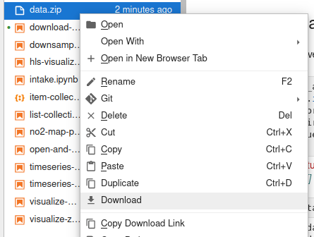

!pip install -q stac-assetDownload STAC assets
Programatically download assets for local use
Run this notebook
You can launch this notebook in VEDA JupyterHub by clicking the link below.
Launch in VEDA JupyterHub (requires access)
Learn more
Inside the Hub
This notebook was written on the VEDA JupyterHub and as such is designed to be run on a jupyterhub which is associated with an AWS IAM role which has been granted permissions to the VEDA data store via its bucket policy. The instance used provided 16GB of RAM.
See (VEDA Analytics JupyterHub Access)[https://nasa-impact.github.io/veda-docs/veda-jh-access.html] for information about how to gain access.
Outside the Hub
The data is in a protected bucket. Please request access by emailng aimee@developmentseed.org or alexandra@developmentseed.org and providing your affiliation, interest in or expected use of the dataset and an AWS IAM role or user Amazon Resource Name (ARN). The team will help you configure the cognito client.
You should then run:
%run -i 'cognito_login.py'Approach
This notebook shows how to download data for local use.
This is generally not the recommended approach. Whenever possible it is better to not transfer large volumes of data out of the original physical storage location. Instead users should practice data-proximate computing by processing in the same cloud and region. That is why the data for VEDA are hosted in the same region as this VEDA JupyterHub instance.
However, sometimes you do need to download assets. This might be because the assets cannot be accessed directly from remote storage, or you don’t have access to an environment running in the same cloud/region.
For these special cases, this is how you go about downloading data:
- Use
pystac_clientto open and search the STAC catalog - Use
stac-assetto download the assets related to that search - If you need the file on your local machine, zip and download the output directory
Note that the default examples environment is missing the stac-asset package. We can pip install that before trying to import.
import stac_asset
from pystac_client import ClientDeclare your collection of interest
You can discover available collections the following ways:
- Programmatically: see example in the
list-collections.ipynbnotebook - JSON API: https://staging-stac.delta-backend.com/collections
- STAC Browser: http://veda-staging-stac-browser.s3-website-us-west-2.amazonaws.com
STAC_API_URL = "https://openveda.cloud/api/stac/"
collection = "caldor-fire-burn-severity"catalog = Client.open(STAC_API_URL)
search = catalog.search(collections=[collection])
print(f"Found {len(search.item_collection())} items")Found 1 itemsDownload the assets
Once you have identified the items that you are interested in, use stac_asset to download the related assets.
await stac_asset.download_item_collection(
search.item_collection(),
directory="data",
config=stac_asset.Config(make_directory=True, s3_requester_pays=True)
)- type "FeatureCollection"
features[] 1 items
0
- type "Feature"
- stac_version "1.0.0"
- id "bs_to_save"
properties
- end_datetime "2021-10-21T12:00:00+00:00"
- start_datetime "2021-08-15T00:00:00+00:00"
- datetime None
geometry
- type "Polygon"
coordinates[] 1 items
0[] 5 items
0[] 2 items
- 0 -120.61338752166166
- 1 38.54940283865057
1[] 2 items
- 0 -119.91905658168675
- 1 38.54940283865057
2[] 2 items
- 0 -119.91905658168675
- 1 38.90577651328637
3[] 2 items
- 0 -120.61338752166166
- 1 38.90577651328637
4[] 2 items
- 0 -120.61338752166166
- 1 38.54940283865057
links[] 4 items
0
- rel "collection"
- href "https://openveda.cloud/api/stac/collections/caldor-fire-burn-severity"
- type "application/json"
1
- rel "parent"
- href "https://openveda.cloud/api/stac/collections/caldor-fire-burn-severity"
- type "application/json"
2
- rel "root"
- href "https://openveda.cloud/api/stac/"
- type "application/json"
- title "VEDA (Visualization, Exploration, and Data Analysis) STAC API"
3
- rel "preview"
- href "https://openveda.cloud/api/raster/collections/caldor-fire-burn-severity/items/bs_to_save/map?assets=cog_default&rescale=0%2C5&colormap_name=inferno_r"
- type "text/html"
- title "Map of Item"
assets
cog_default
- href "/home/jovyan/veda-docs/notebooks/quickstarts/data/bs_to_save/bs_to_save.tif"
- type "image/tiff; application=geotiff"
- title "Default COG Layer"
- description "Cloud optimized default layer to display on map"
proj:bbox[] 4 items
- 0 -120.61338752166166
- 1 38.54940283865057
- 2 -119.91905658168675
- 3 38.90577651328637
- proj:epsg 4326
- proj:wkt2 "GEOGCS["WGS 84",DATUM["WGS_1984",SPHEROID["WGS 84",6378137,298.257223563,AUTHORITY["EPSG","7030"]],AUTHORITY["EPSG","6326"]],PRIMEM["Greenwich",0],UNIT["degree",0.0174532925199433,AUTHORITY["EPSG","9122"]],AXIS["Latitude",NORTH],AXIS["Longitude",EAST],AUTHORITY["EPSG","4326"]]"
proj:shape[] 2 items
- 0 1103
- 1 2149
raster:bands[] 1 items
0
- scale 1.0
- nodata -100.0
- offset 0.0
- sampling "area"
- data_type "float64"
histogram
- max 4.0
- min 1.0
- count 11
buckets[] 10 items
- 0 10233
- 1 0
- 2 0
- 3 67409
- 4 0
- 5 0
- 6 71518
- 7 0
- 8 0
- 9 24232
statistics
- mean 2.63295307741995
- stddev 0.7936384596443959
- maximum 4.0
- minimum 1.0
- valid_percent 32.191658745247146
proj:geometry
- type "Polygon"
coordinates[] 1 items
0[] 5 items
0[] 2 items
- 0 -120.61338752166166
- 1 38.54940283865057
1[] 2 items
- 0 -119.91905658168675
- 1 38.54940283865057
2[] 2 items
- 0 -119.91905658168675
- 1 38.90577651328637
3[] 2 items
- 0 -120.61338752166166
- 1 38.90577651328637
4[] 2 items
- 0 -120.61338752166166
- 1 38.54940283865057
proj:projjson
id
- code 4326
- authority "EPSG"
- name "WGS 84"
- type "GeographicCRS"
datum
- name "World Geodetic System 1984"
- type "GeodeticReferenceFrame"
ellipsoid
- name "WGS 84"
- semi_major_axis 6378137
- inverse_flattening 298.257223563
- $schema "https://proj.org/schemas/v0.4/projjson.schema.json"
coordinate_system
axis[] 2 items
0
- name "Geodetic latitude"
- unit "degree"
- direction "north"
- abbreviation "Lat"
1
- name "Geodetic longitude"
- unit "degree"
- direction "east"
- abbreviation "Lon"
- subtype "ellipsoidal"
proj:transform[] 9 items
- 0 0.0003230948999417961
- 1 0.0
- 2 -120.61338752166166
- 3 0.0
- 4 -0.00032309489994179427
- 5 38.90577651328637
- 6 0.0
- 7 0.0
- 8 1.0
roles[] 2 items
- 0 "data"
- 1 "layer"
rendered_preview
- href "/home/jovyan/veda-docs/notebooks/quickstarts/data/bs_to_save/preview.png"
- type "image/png"
- title "Rendered preview"
- rel "preview"
roles[] 1 items
- 0 "overview"
bbox[] 4 items
- 0 -120.61338752166166
- 1 38.54940283865057
- 2 -119.91905658168675
- 3 38.90577651328637
stac_extensions[] 2 items
- 0 "https://stac-extensions.github.io/raster/v1.1.0/schema.json"
- 1 "https://stac-extensions.github.io/projection/v1.1.0/schema.json"
- collection "caldor-fire-burn-severity"
Note: For downloading just one item use stac_asset.download_item.
Download from JupyterHub
If you want to further download from this JupyterHub to your local machine you can zip the data directory:
!zip -r data.zip dataupdating: data/ (stored 0%)
updating: data/item-collection.json (deflated 74%)
updating: data/bs_to_save/ (stored 0%)
updating: data/bs_to_save/bs_to_save.tif (deflated 16%)
updating: data/bs_to_save/preview.png (deflated 3%)Then right click on the the zipped file in the Jupyter file browser and select “Download”
